Kindo 官方截图 → 简化 Demo
高相似度来自页面骨架、青色主色、表格、学生头像、金额位置与移动导航；功能按已确认需求缩减。
这是官方原始截图对照板，不是已实现的 Demo，也不是新设计稿。截图里的完整功能不代表首版范围。研究日期：2026-10-18。
首版页面
管理端：Payable Status、Create Payable，详情行内展开。家长端：Home、Requests、Account，加一个详情/全额付款弹层。一个家长多个孩子；每笔费用独立、一次付清。
家长端：新版界面参考
保留 Home 标题、浅青欢迎区、请求数量入口和底部导航；去掉钱包、商店和日历。
官方来源文章 ↗ · 查看原图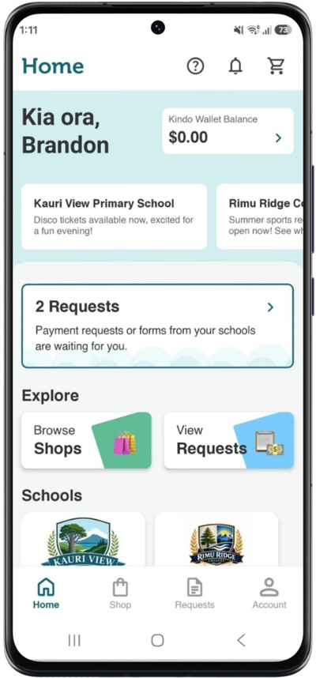
核心参考：学生彩色头像在左、金额在右、费用标题与说明居中段、下方轮廓按钮。Pending/Paid 替换 Forms；删除钱包、Pay all、Partial pay 与购物车。
官方来源文章 ↗ · 查看原图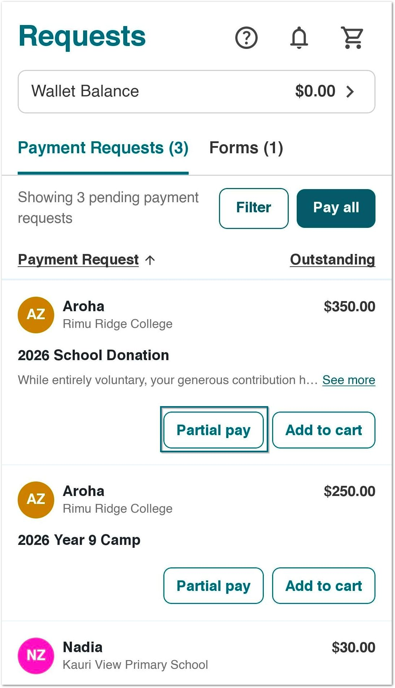
保留白色上圆角弹层、费用与学生信息、大金额和全宽动作；改为固定全额，移除金额输入和购物车。
官方来源文章 ↗ · 查看原图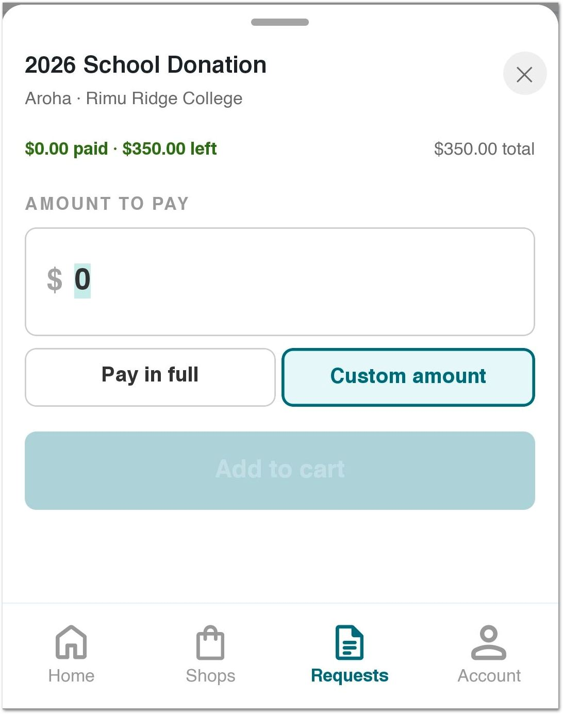
管理端：工作区、表单与学生选择
保留浅青底、青色标题、右上创建按钮、大白面板和表格骨架；删掉类别、年份、高级筛选与导出。
官方来源文章 ↗ · 查看原图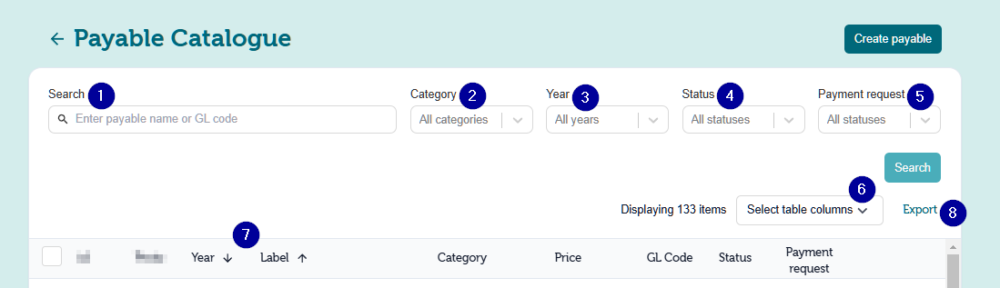
保留左侧节说明、右侧字段、细分隔线和右上主动作。只做 General、Student、Payment。
官方来源文章 ↗ · 查看原图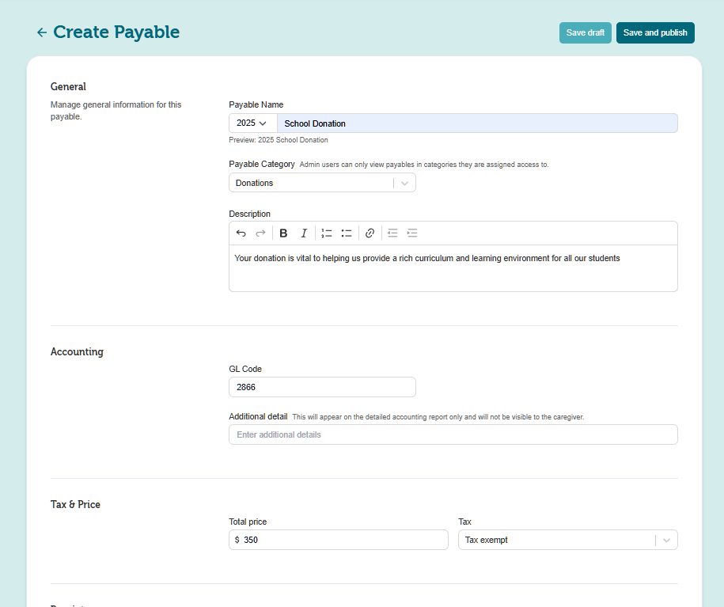
管理列表数据表参考；只保留实际工作的刷新和状态筛选，不做批量、导出、列选择。
官方来源文章 ↗ · 查看原图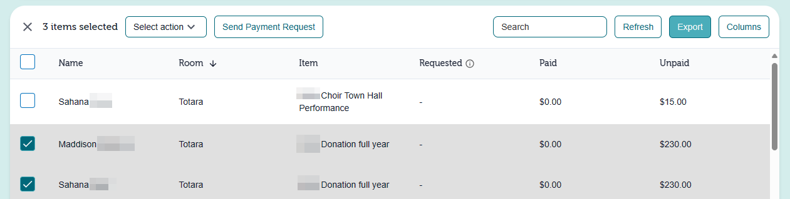
学生选择在简化的创建表单里完成，不增加完整 Apply 工作流。
官方来源文章 ↗ · 查看原图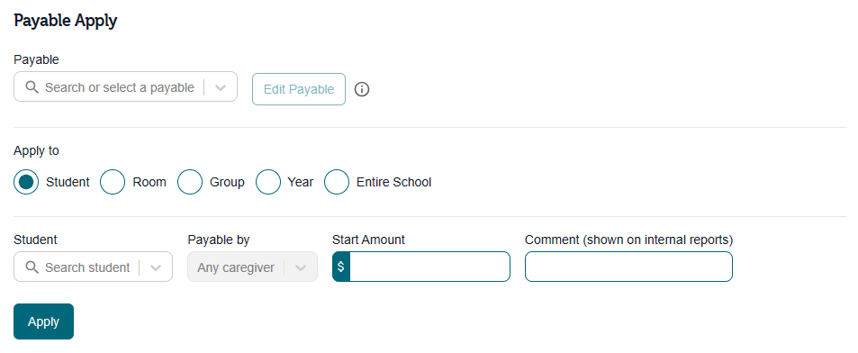
其余原始截图：字段、状态筛选与完整产品范围（7 张）
字段样式参考。教学圈注/箭头不是 UI；说明改用普通文本域，不做富文本工具栏。
官方来源文章 ↗ · 查看原图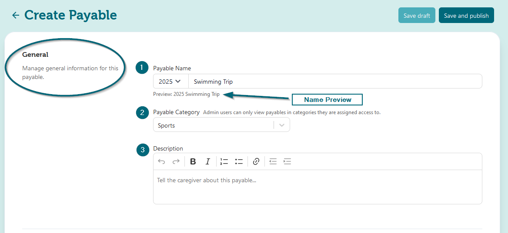
保留货币前缀输入样式，删除 Tax/GST。
官方来源文章 ↗ · 查看原图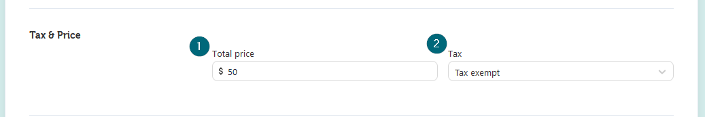
原版的列配置菜单；首版明确不做。
官方来源文章 ↗ · 查看原图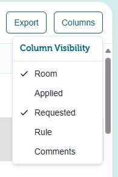
只帮助理解原版管理范围，首版不做这组多功能入口。
官方来源文章 ↗ · 查看原图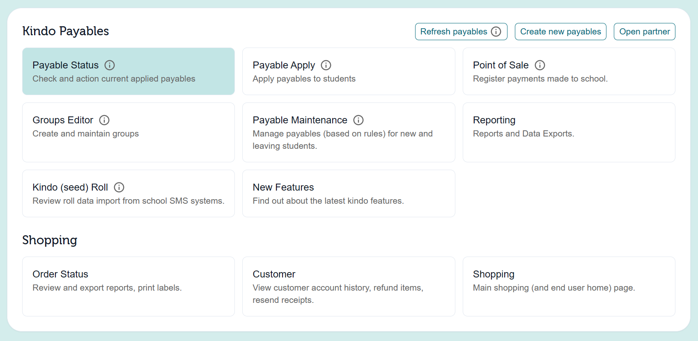
状态筛选参考，只需要 No payments / Paid。
官方来源文章 ↗ · 查看原图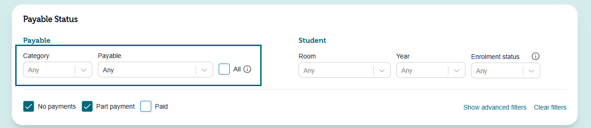
原版有年级、房间等学生筛选；首版去掉。
官方来源文章 ↗ · 查看原图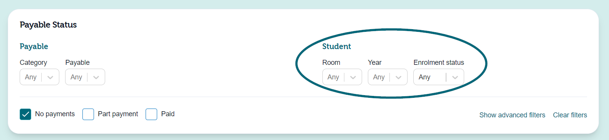
高级筛选只作范围参考，不复制。
官方来源文章 ↗ · 查看原图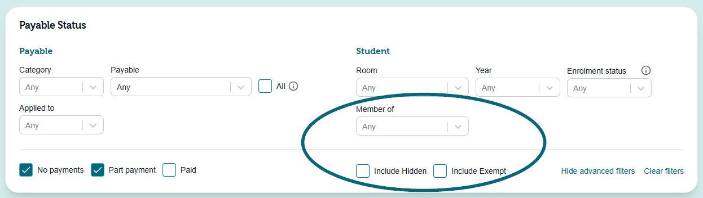
颜色取样
Web 背景 #D4EDEC，Web 主色 #00687A，次青色 #4AADBA；Mobile 深青按钮 #065969。数值来自位图取样，不是官方 CSS token。
家长新版以官方新版介绍与 Requests 截图为主。管理员参考来自公开帮助文章，不推定所有图片都是当前线上版本。教学圈注、箭头、打码和系统手机外框不属于 Demo 样式。